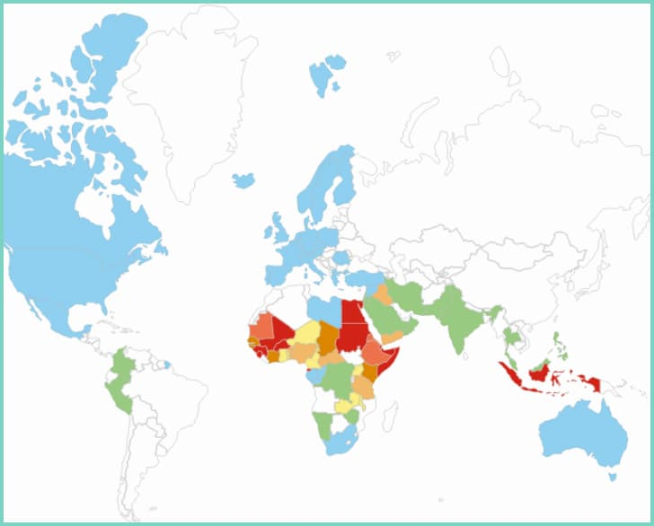
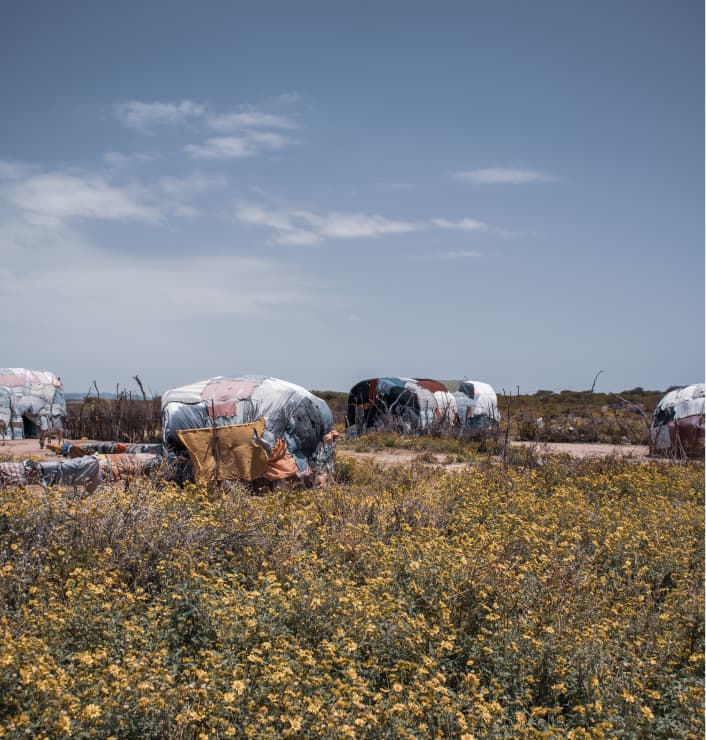

Qu'est ce que c'est?
L’excision est une mutilation génitale.
Elle touche des millions de femmes dans le monde.
En 2016, on pouvait dénombrer 200 millions de filles et femmes ayant subit une excision, dont 1 million en Europe.
Elles se retrouvent enlevées du droit d’avoir du plaisir.
Il y a quatre types d’excision :
- 1- 80% L'ablation du prépuce du clitoris et du clitoris ou des parties de ceux-ci.
- 2- Le premier type en ajoutant ceci aux petites lèvres ou bien de parties de celles-ci.
- 3- 15% L’excision d’une partie ou de la totalité des organes génitaux externe de la femme, le resserrement du vagin, tout en repositionnant les lèvres pour laisser un petit trou pour l’urine et le flux menstruel.
- 4- 5% Tout ce qui est possible pour blesser ou exciser les organes génitaux. Exemple : piquer, percer, couper, rétrécir le clitoris ou les lèvres vaginales, faire des cicatrices de brûlures, racler l’ouverture vaginale ou introduire des substances corrosives ou de plantes dans le but de resserrer l’orifice vaginal.

Où est pratiqué et qui pratique l’excision ?
Au Mali, Burkina Faso, Guinée, Sierra Leone, Egypte, Soudan, Guinée équatoriale, Somalie, Somaliland, et en Indonésie ; 75 et 100% des femmes ont subi une mutilation sexuelle féminine.
Ce sont principalement dans les pays d’Afrique, et dans le Sud de l’Asie que c’est pratiqué.

Chez certains peuples, l’excision est opérée sur les petites filles et jeunes femmes.
Souvent pratiqué par des femmes âgées qui ont appris à le faire de leur mère et qui ont un statut spécial dans la communauté.
Mais depuis peu, dans certains pays cette pratique est faite par des professionnels de la santé et donc moins dangereuse pour la santé.
Les conséquences :
La cicatrice au niveau du vagin, devra être ouverte à avant les rapports sexuels ainsi qu'à l'accouchement, ce qui est à chaque fois extrêmement douloureux.
La plupart du temps, c’est une accoucheuse traditionnelle ou le mari qui incise la femme avec un instrument tranchant le jour des noces.
Dans le meilleur des cas, réalisés à l’hôpital.
Dans d’autres cas, le mari déchire petit à petit sa nouvelle épouse.
Le but de cette pratique est que l’homme prouve sa virilité.
Après chaque accouchement,
le sexe de la femme est généralement recousu (c’est ce qu’on appelle la
ré-infibulation.)
Pour pratiquer l’excision, est utiliser :
des lames de rasoir, ciseaux, couteau, éclat de verre…

La plaie sera recousue à vif avec du fil non stérile ou avec tout autre matériel collant.
Aujourd’hui quand elle est pratiquée par des professionnels, cela est fait avec des ciseaux chirurgicaux et sous anesthésie.
Mais bien évidemment dans les deux cas, sont possibles des risques physique :
Hémorragie, amnésie, problème urinaire et menstruel, Infection, Mort …
Mais bien évidemment dans les deux cas, sont possibles des risques psychologique :
La dépression, L’anxiété, Le stress post-traumatique, Le repli et perte d’estime de soi, Le sentiment de trahison et d’incompréhension...
L’évolution :
L’excision est apparue avant le Christianisme et l’Islam, mais l’origine n’est pas vraiment certaine.
Des recherches lui trouvent une origine en Nubie, dans la Corne de l’Afrique (aujourd’hui à l’Egypte et au Soudan).
Des momies égyptiennes présenteraient des marques attestant de la pratique.
Certains pensent que c’était pratiqué par les femmes de la société pharaonique par les classes sociales élevées. La pratique se serait ensuite répandue dans le reste de la collectivité.
Puis en allant vers l’est et l’ouest de l’Afrique.
Avec le temps, l’excision serai devenue une tradition dans énormément de sociétés.

Elle fut pratiquée jusqu’aux années 50 pour traiter des “maladies” :
- Hystérie
- Epilepsie
- Masturbation
- Homosexualité
- Nymphomanie
- ...
Ce rituel est d’un autre âge, et malheureusement l’excision existe encore aujourd’hui dans pas mal de pays d’Afrique, encore énormément de jeunes filles le subissent, souvent avant 15 ans.
La plupart des sociétés où il y en a encore, se manifestent car il reste une réelle inégalité entre les sexes.
C’est un rite de passage pour les filles pour devenir une femme.
Ne pas oublier que les mutilations génitales féminines ne sont pas approuvées par l’islam ou le christianisme, mais malheureusement, les croyances liées à la religion sont fréquemment invoquées pour justifier leur pratique.